The short version
- Get a Quansheng UV-K1 or UV-K5 V3 and a USB-C data cable.
- On a computer, open the installer in Chrome or Edge.
- Follow its six steps: pick the radio, pick the firmware, connect, back up, install.
- Switch the radio on. The ALERT receiver starts by itself and listens on 151.500 MHz.
About 15 minutes the first time. Nothing to download, nothing to compile, and nothing here can permanently damage the radio.
What it does
Many flood-warning networks use ALERT (Automated Local Evaluation in Real Time). Rain gauges and river-level sensors out in the catchments send a short burst of data over VHF radio each time something changes: a tip of the rain bucket, or the river rising or falling. Each burst carries a station number and a reading, about a third of a second of warbling tones.
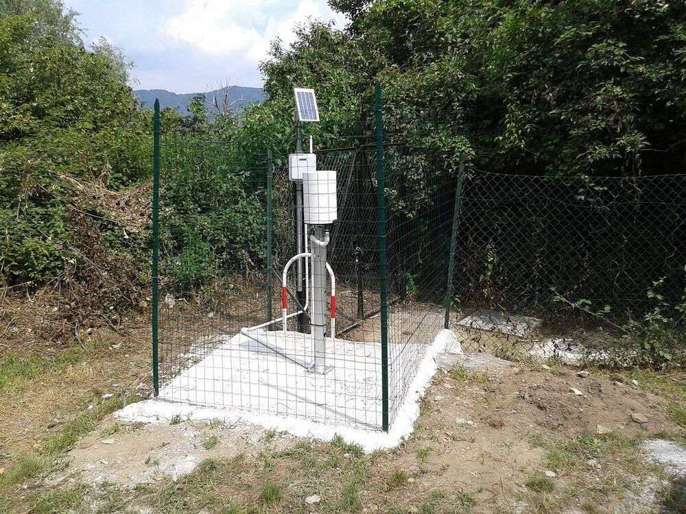
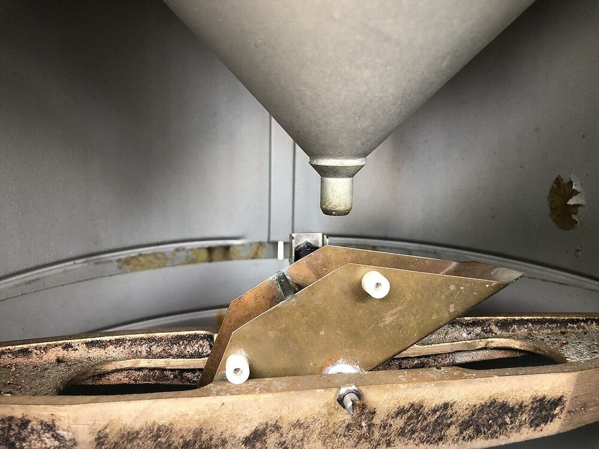
This project turns an inexpensive Quansheng handheld into a receiver for those bursts. The radio decodes each one itself and shows which station sent it, what kind of sensor it is (rain, river level, battery), the value, and how strong the signal was. No computer is needed once it’s installed.
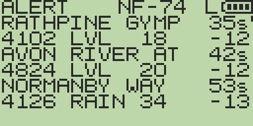
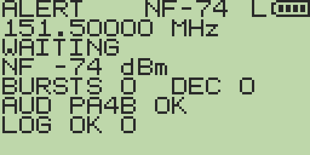
A hobby receiver, not a warning service. It shows raw readings from whatever it hears. For flood warnings, follow the Bureau of Meteorology and your local council. The radio only listens: the ALERT app never transmits.
What you need
Three things, plus a computer for the one-off install.
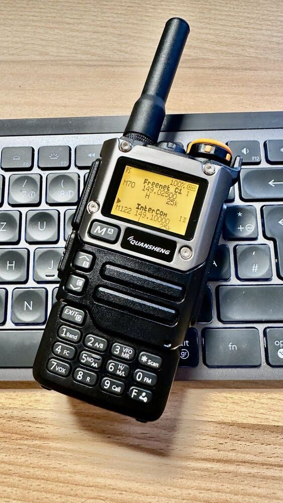
Quansheng UV-K1 or UV-K5 V3
The newer model, with a PY32F071 chip inside. This is the one the receiver is proven on: 22 bursts decoded out of 22 in on-air testing, no modification needed.
Sold as UV-K1, or as UV-K5 V3 / UV-K5(99). When buying a “UV-K5”, ask for V3: plenty of sellers still ship the older one, and from the outside a V3 can look just like the UV-K5(8) pictured.
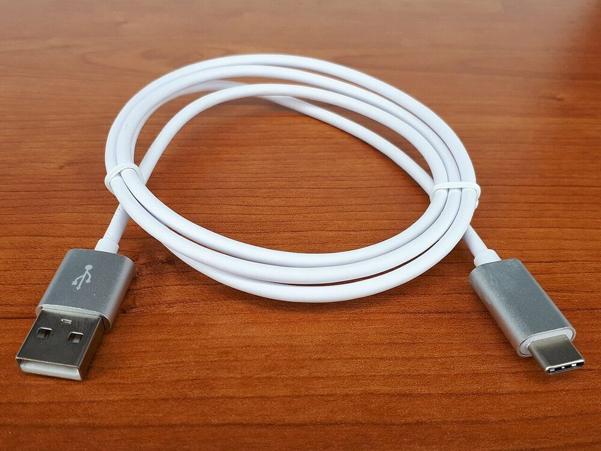
A USB-C data cable
Any phone or laptop USB-C cable that carries data. The V3 / UV-K1 has a real USB port, so this is all it needs. The thin cable in the box is sometimes charge-only. If the computer doesn’t see the radio, try another cable first.
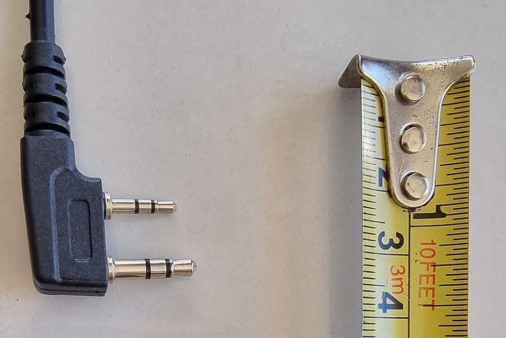
Two-pin programming cable
The “Kenwood K1” USB cable used by Baofeng radios and CHIRP: a 3.5 mm and a 2.5 mm plug at one end. The older UV-K5 must use this, because its USB-C socket only charges. Prefer one that says CH340. Or build one.
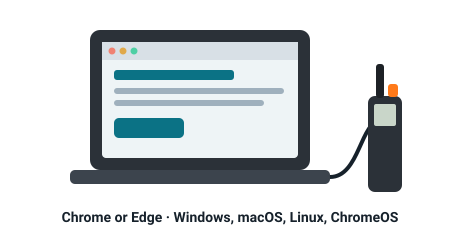
A computer with Chrome or Edge
Windows, macOS, Linux or ChromeOS. The installer talks to the radio through the browser’s Web Serial feature, which phones, tablets, Safari and most Firefox versions don’t have.
Nice to have
- A better antenna. The stock antenna works if you can hear the network’s repeater. For weak signals, a VHF antenna tuned near 150 MHz, or a spot up high, helps more than anything in the firmware.
- Python 3 on the computer, if you want to log readings to a file or load other regions’ station names (see Logging).
Already have an older UV-K5, UV-K5(8) or UV-K6? Firmware for it is here too, and installing it does no harm. But it has not yet decoded a real ALERT transmission. The work on the V3 later found that these networks use 1300/2100 Hz tones, not the 1200/2200 Hz that build was written for. It also found that the radio chip’s built-in modem, which the older build relies on, never locks onto them. The V3 decodes in software instead. On an older UV-K5 that route needs a one-capacitor hardware modification, and the software hasn’t caught up yet. If you’re buying a radio for this, buy a UV-K1 or UV-K5 V3.
Which radio do I have?
From the front they can look almost identical, but the two have different chips and can’t run each other’s firmware. Three ways to tell, easiest first:
- Take the battery off and read the label. A V3 has V3 printed beside the barcode, and the model is often UV-K5(99). A UV-K1 says UV-K1.
- Check the firmware version, if it still has the stock firmware. The installer’s Connect step reads it out: 7.x is a V3 / UV-K1, and 2.x is the older UV-K5.
- Let the installer check. In bootloader mode the radio announces its bootloader version (2.x or 7.x). The installer reads it before writing anything and refuses to put the wrong firmware on.
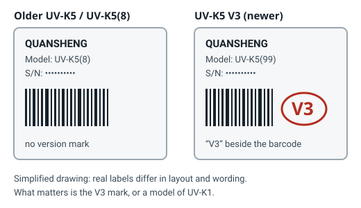
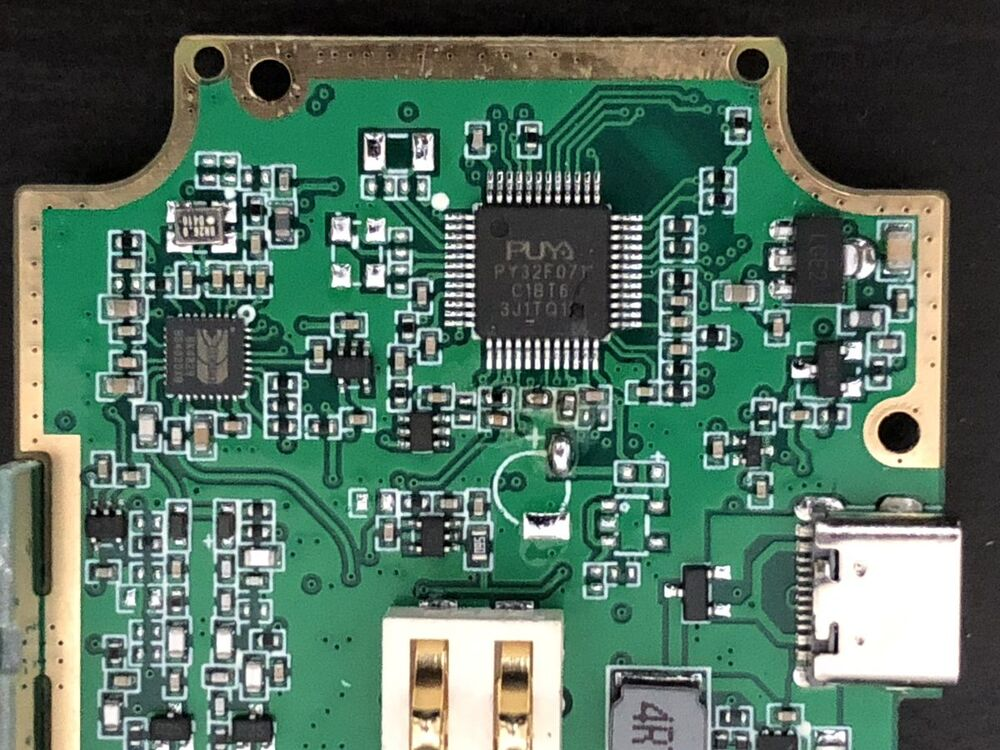
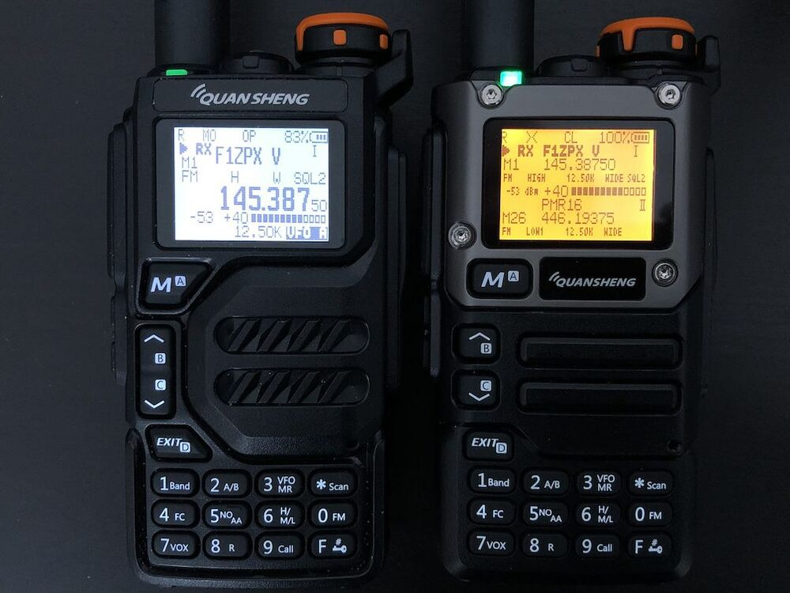
| UV-K1 / UV-K5 V3 | UV-K5 / UV-K5(8) / UV-K6 / UV-5R Plus | |
|---|---|---|
| Label | V3 beside the barcode, often UV-K5(99); or UV-K1 | no version mark |
| Stock firmware | 7.x | 2.x (e.g. 2.01.26) |
| Bootloader | 7.x (e.g. 7.00.07) | 2.x (e.g. 2.00.06) |
| Chip | PY32F071 | DP32G030 |
| USB-C socket | data and charging: connect with any USB-C data cable | charging only: needs the two-pin cable |
| ALERT receiver | decodes on air no modification | experimental not yet decoding (why) |
| Built on | F4HWN Fusion port (RescueOps edition) | egzumer custom firmware |
Install it
The installer walks you through everything, explains each screen as you go, and checks every file and every radio before it writes anything. Here’s what to expect, so nothing comes as a surprise.
1 · Pick your radio, then the firmware
Choose UV-K1 or UV-K5 V3 or the older UV-K5, then the firmware build offered for it. The V3 has one build. The older UV-K5 has two, differing only in which region’s station names are stored on the radio.
2 · Connect
Plug the cable in, switch the radio on normally, press Connect, and choose it from the list the browser shows. Over USB-C a V3 / UV-K1 appears as a USB Serial Device; the two-pin cable appears as USB-SERIAL CH340 or similar. The page then says what the radio is running.
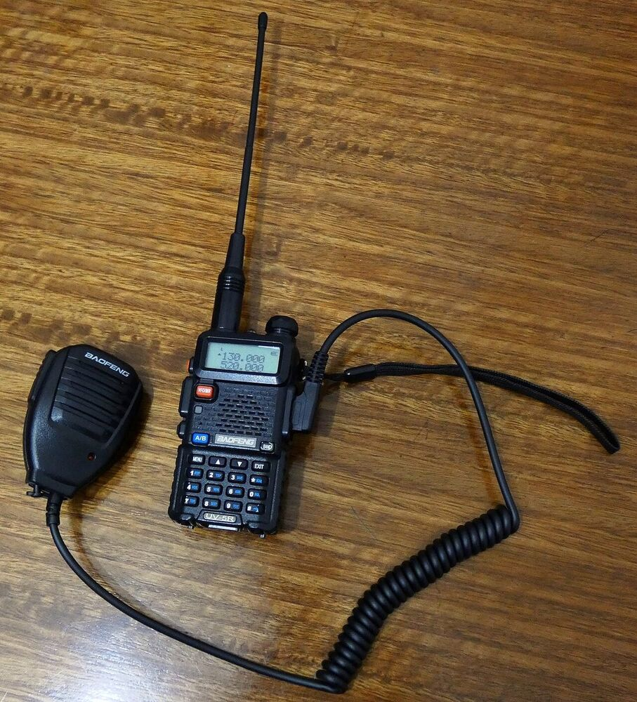
Empty list? Over USB-C, try another cable (charge-only cables are common). With the two-pin cable, install the CH340 driver. Either way, close CHIRP, UV Studio or any terminal program that might hold the port.
3 · Back up
One click saves your radio’s factory calibration, channels and settings to your Downloads folder. The calibration is unique to your radio, so keep that file. On a V3 / UV-K1 the calibration sits on a separate memory chip that installing never touches. If the backup won’t run on stock V3 firmware, tick “skip”. The last step takes a fresh one from the new firmware, which is the backup that matters.
4 · Bootloader mode and install
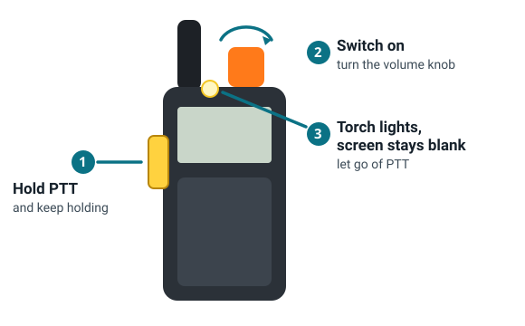
Then press Install firmware now. With the two-pin cable the connection survives the power cycle. Over USB-C the port disappears when the radio switches off: that’s normal. When you press Install the browser asks for it again; pick the radio, which can show under a new name in bootloader mode. Installing takes under a minute.
The installer stops before writing a single byte if the radio’s bootloader says it is the other kind of radio, and offers to switch to the right firmware.
5 · Done
A V3 / UV-K1 restarts by itself into the new firmware. Press Check what it is running to confirm it, then Back up my radio once more. Keep that file, named with the radio’s serial number.
Rather not use a browser?
- V3 / UV-K1: UV Studio
can flash a local file: download
quansheng-alert-v3.binfrom Downloads and choose it there. From the command line,tools/serialtoolin quansheng_alert_v3 does the same:pip install pyserial python tools/serialtool/cli.py flash --port COM5 quansheng-alert-v3.bin
- Older UV-K5: egzumer’s uvtools
takes the
.packed.bin; k5prog takes the raw.bin:k5prog -F -YYY -b quansheng-alert-default.bin
Using the receiver
Starting and stopping
- It starts by itself about five seconds after you switch the radio on.
- To open it by hand: MENU, scroll to the last item,
AlrtRx(the list wraps, so going back one from the first item gets there), then MENU MENU. - Leave with EXIT. If you’ve scrolled down the list, the first EXIT jumps to the top and the second leaves. Settings are saved as you leave.
Leave with EXIT, not PTT. Holding PTT also closes the app, but if you keep holding it the radio goes back to normal operation with PTT pressed, and may transmit, possibly on the ALERT frequency. Don’t do that.
Frequency
It listens on whatever frequency the radio is tuned to. If that is outside 130–174 MHz,
it tunes itself to 151.500 MHz, the frequency of the South-East
Queensland (MegaNet) networks it was tested on. To change it inside the app:
MENU, then MENU down to FREQ MHz, and ▲/▼
in 12.5 kHz steps (hold to go faster). EXIT saves.
The first time
SETTLING 10…1: ten seconds while it measures the background noise.CENSUS: three or four seconds while it plays two short tones through the radio’s own audio to find which input carries the receiver’s audio. Nothing is transmitted. You may hear the tones. This happens until the first decode, then it remembers the answer.WAITING: listening. TheAUDline shows the audio path it found:CHKuntil the first decode, thenOK(e.g.AUD PA4B OK).
Then leave it. Stations transmit when something changes, and report in regularly. On test, the South-East Queensland network sent dozens of bursts in ten minutes. A quieter network, or dry weather, means fewer.
What’s on the screen
- Top line:
ALERT, thenRXwhile a signal is coming in (or+Nnew readings while you’re scrolled away), the noise floor (NF-74),Lwhen logging, and the battery. - The list (newest at the top, three at a time): the station name, or
ID 4142 ?if it isn’t in the radio’s table, with how long ago it was heard. Under it: station number, kind (RAIN,LVL,BATT,REPrepeater,OTH,CHK), the value, and the signal strength in dBm. - Values are what the station sends. Rain is the gauge’s running count of
bucket tips, so the rise between two readings is the rain that fell in between. (MegaNet
counts 0.2 mm a tip unless a station records otherwise.) River level is the raw sensor
number, scaled differently at each site. Battery is shown in volts.
FULLmeans 2047, the sensor’s maximum: over-range or a faulty sensor. - Detail view (1): the full name, kind, value and raw value, signal and noise floor, the fade margin, the data format, and how long ago it was heard.
Keys
| Key | In the list / detail view | In settings |
|---|---|---|
| ▲ ▼ | scroll one reading | change the value |
| 1 | open / close the detail view | — |
| MENU | open settings | next row |
| * | voice on / off (no effect in this build: see below) | previous row |
| F | speaker: OFF → SQL → ON | — |
| EXIT | back; from the top of the list, leave the app | save and go back |
After 30 seconds without a key press the view goes back to the newest reading. This radio has no # key. The bottom-right key is F.
Settings (MENU inside the app)
| Row | What it does | Default |
|---|---|---|
| VOICE | Read readings aloud. The published build has the voice prompts compiled out to save space, so this does nothing yet. | OFF |
| SPEAKER | OFF silent; SQL you hear each burst as it arrives; ON you hear the channel all the time | SQL |
| CSV OUT | Send each reading to a connected computer (see Logging) | ON |
| LOG | Keep every reading in the radio’s memory, about 6,000 of them, oldest dropped first | ON |
| UNKNOWN | Show or hide stations that aren’t in the radio’s table (they’re still logged) | SHOW |
| CONFIRM | Only accept a reading heard twice in the same burst. Fewer false readings, fewer readings overall | OFF |
| SQ GATE | Only count bursts at least 15 dB above the noise, so noise isn’t mistaken for data | ON |
| SNR REQ | How much signal over noise counts as decodable; only affects the fade-margin figure | 12 |
| DEBUG | Extra diagnostic lines on USB | OFF |
| MDM MODE | Shows ADC, the software demodulator. Not adjustable | — |
| CENSUS | The audio path it chose (e.g. PA4B). ▲ runs the census again | — |
| FREQ MHz | Receive frequency, 130–174 MHz in 12.5 kHz steps | the radio’s |
| SQL LEVEL | The radio’s squelch, in tenths (0.0–9.0). It changes the radio’s main squelch too | the radio’s |
Experimental: this build hasn’t decoded a real transmission yet. Here’s why. It is documented in full in the quansheng_alert README.
Set up, once
- Menu → Voice → English, so it reads readings out.
- Menu → Sql: this build’s squelch goes 0.0 to 9.0 in tenths. Raise it from 0.0 until the hiss just goes quiet.
- Tune to 151.500 MHz (or your network’s frequency), FM.
- Open the receiver with F then 0, from the menu item
AlrtRx, or by assigning ALERT RX to a side key.
Keys
| EXIT | leave (settings are saved) |
|---|---|
| MENU | settings: ▲/▼ change, MENU/* next/previous row, EXIT saves |
| ▲ ▼ | squelch up / down in tenths |
| * | voice announcements on / off |
| F | monitor: hear the bursts |
| 1 | raw view: counters and the first bytes of the last capture |
| 5 | say the last reading again |
| 0 | clear history and counters |
Its INPUT setting chooses between the radio chip’s modem (BK MODEM,
the default) and a software demodulator (ADC PA8). The software demodulator
needs one 100 nF capacitor from the BK4819’s audio output (pin 8) to the
microcontroller’s PA8 (pin 9). The
README
has the details and a first-field-test checklist.
Logging to a computer (optional)
The radio works on its own, but plugged into a computer it can also stream every reading, hand over its stored log as a spreadsheet, and take a station list for any region.
UV-K1 / UV-K5 V3: alertterm
A small Python program in the quansheng_alert_v3 repository. Download the repository (zip), install Python 3, then in a terminal in that folder:
pip install pyserial python tools/alert/alertterm.py live # a live table of readings, also saved to tools/alert/logs/ python tools/alert/alertterm.py log-download --csv decodes.csv # everything the radio has logged python tools/alert/alertterm.py stations-upload --all # every MegaNet station's name, not just SE Queensland python tools/alert/alertterm.py screenshot screen.png --scale 4 python tools/alert/alertterm.py console # type HELP
It finds the radio on USB-C by itself and sets the radio’s clock each time it connects (the clock forgets when switched off). The ALERT app must be running. Only one program can use the port at a time, so close the installer tab first. The full description of what the radio sends is ALERT_SERIAL.md.
Station names: the radio comes with South-East Queensland’s
443 stations built in (Constitution Hill, Mt Glorious, Marburg and Mt Stapylton networks).
stations-upload --all downloads the full MegaNet database (about 2,600 stations)
and stores it in the radio, with names up to 40 characters. Other stations still decode
without a name; they show as ID nnnn ?.
Older UV-K5
Each reading is also written to the two-pin cable at 38400 baud as
ALERT,<id>,<value>,<format>,<rssi>,<name>. Any
serial terminal can capture it.
Troubleshooting
The browser’s list is empty, or the radio doesn’t answer
- USB-C (V3 / UV-K1): try another cable, since charge-only cables are very common. Make sure the radio is switched on. No driver is needed.
- Two-pin cable: install the CH340 driver, then push both plugs in firmly. A half-seated plug is the most common fault. Cheap “PL2303” cables are often counterfeit chips that Windows refuses to drive.
- Close anything else that might hold the port: CHIRP, UV Studio, alertterm, a terminal, another tab.
- The installer’s Toolbox → Check the cable works out which side the problem is on. More on diagnosing a cable.
It won’t go into bootloader mode
Switch fully off first. Then hold PTT down before turning the knob, and keep holding until the torch LED lights. The screen stays blank in bootloader mode; if the normal screen appears, PTT wasn’t held in time. A flat battery can also stop it: charge first.
“This radio is a UV-K5 V3 / UV-K1, and the firmware you picked is for a UV-K5” (or the other way round)
The installer read the radio’s bootloader and stopped before writing anything. Use the Switch to firmware for… button it shows, or go back to step 1 and pick the other radio. There is deliberately no way to override this one: the result would be a radio that doesn’t start (though still recoverable through bootloader mode).
The install stopped half way
Nothing is lost. The bootloader is never overwritten, so the radio still goes into bootloader mode. Switch it off, hold PTT, switch on, and run the install again.
It hears bursts but decodes nothing
- Check the frequency (
FREQ MHz) is your network’s. - Watch the top line:
RXshould appear during each burst, andBURSTSshould count up on the waiting screen. If bursts count butDECdoesn’t, the signal may be too weak: try outdoors, up high, or with a better antenna. The detail view’s signal andFADEfigures show how much margin you have. - If the
AUDline saysOFF(nothing found), turn the volume up a little and re-run the census: settings →CENSUS→ ▲. SQ GATErejects anything less than 15 dB above the noise. That’s the right setting, but it means a very weak station will be ignored rather than misread.
The log says LOG FOREIGN
The memory area the log uses already holds something written by other firmware, so the
app won’t touch it. If you’re sure, clear it from alertterm.py console with
LOG FORMAT FORCE.
Going back to stock, or to other custom firmware
Use the installer’s Use my own firmware file instead in step 2 with any firmware file. It checks the file is for the right chip first.
- V3 / UV-K1: F4HWN releases from armel/uv-k1-k5v3-firmware-custom, and Quansheng’s stock UV-K1 firmware 7.03.01, kept in the archive folder alongside older F4HWN builds. Stock UV-K5 V3 firmware comes from Quansheng.
- Older UV-K5: stock firmware from Quansheng, or egzumer and its successors.
CHIRP
Custom firmware needs a matching CHIRP driver. For the V3 / UV-K1 it comes with each F4HWN release. Programming channels doesn’t affect the ALERT receiver, which keeps its settings in its own memory area.
The radio won’t start at all
Firmware for the other chip, or an interrupted install, leaves a radio that won’t boot. Bootloader mode still works, so install the right firmware from there. With this site’s firmware, a V3 that crashes five times in a row drops into bootloader mode by itself. Only if bootloader mode itself is gone (which nothing on this site can cause) does an older UV-K5 need the ST-Link unbrick kit.
Downloads
The installer fetches these for you. They’re here for other tools, for keeping a copy, and for checking what you installed.
Firmware
| Radio | Build | File | Source |
|---|---|---|---|
| UV-K1 / UV-K5 V3 | ALERT receiver (F4HWN RescueOps) | quansheng-alert-v3.bin | quansheng_alert_v3 |
| UV-K5 family | Default: Mt Kanigan and neighbours | .packed.bin · raw .bin | quansheng_alert |
| UV-K5 family | South-East Queensland | .packed.bin · raw .bin | quansheng_alert |
Checksums and build details are in firmware/manifest.json. The site rebuilds the V3 firmware from source and refreshes all of them every week.
Tools
- The installer: flash, back up, restore, identify, check a cable.
- k5diag.py: command-line cable and radio
diagnosis (Python,
pip install pyserial). - alertterm.py and friends: logging, station upload, screenshots (V3 / UV-K1).
- serialtool: command-line flasher and EEPROM tool for the V3 / UV-K1.
- UV Studio: the F4HWN project’s browser tool for the V3 / UV-K1 (flashing, calibration, screen mirroring).
- Build a programming cable: pinout and a measure-first procedure.
Source code
- cdomotor-g/quansheng_alert_v3: the V3 / UV-K1 firmware (C, CMake), the ALERT app, and its tools.
- cdomotor-g/quansheng_alert: the older UV-K5 firmware (archived; still builds and flashes).
- cdomotor-g/quansheng_alert_ALL: this site and its installer.
Credits
This stands on a lot of other people’s open work: DualTachyon (the first open UV-K5 firmware), egzumer, armel (F4HWN) and muzkr (the V3 / UV-K1 port and serialtool), k5prog and uvmod (the serial protocol), and MegaNet (the station database). Firmware is Apache-2.0, like its upstreams; this site is MIT.